A practical identity system.
Logo, typography, color, imagery and applications.
Proposed brand extension · Supplied wordmark preserved
A practical identity system.
Logo, typography, color, imagery and applications.
BETA Labs turns the organizer’s attendee list into a shortlist of prospects worth preparing for.
Every profile comes with a signal and an opening draft. The sponsor sends the message and keeps the relationship.
Explain the reason for each priority.
Use restraint, space and clear hierarchy.
Show the actual deliverable, not an outcome guarantee.
The horizontal wordmark is the primary signature. The supplied SVG is the geometry master: eight paths, 1053 × 141.
Use cream on charcoal and charcoal on cream. Black/white variants are reserved for one-color production.
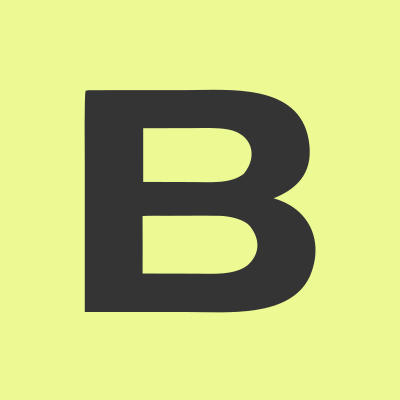
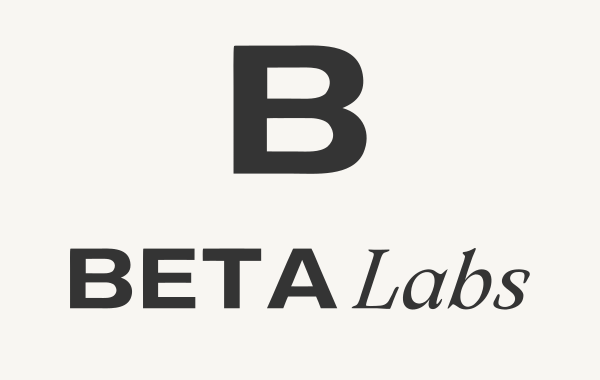
The B symbol is extracted from the supplied wordmark. It is a proposed derivative for avatars, small formats and graphic signatures. Do not substitute it where the full name is needed.
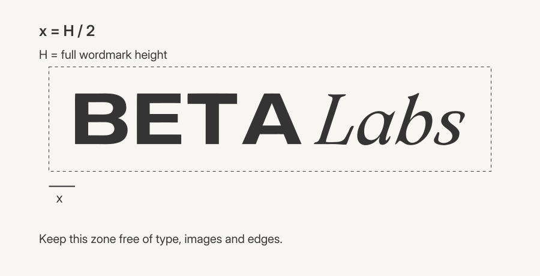
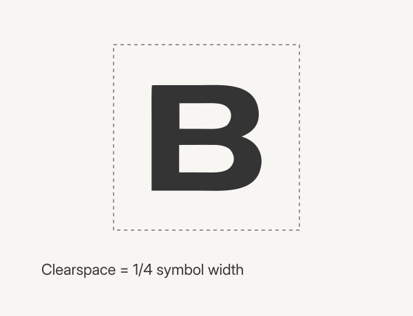
Wordmark.
x = H/2 on every side. H is the full logo height.
Minimum.
Wordmark: 180 px digital / 35 mm print proposed. Symbol: 16 px minimum; 32 px+ preferred for avatars.
Preserve.
No stretching, rotation, outline effects, shadows or low-contrast placement. Keep all letter contours unchanged.
The primary typeface. Precise, clear and adaptable.
ABCDEFGHIJKLMNOPQRSTUVWXYZ
abcdefghijklmnopqrstuvwxyz
0123456789
A proposed editorial accent, one expression per headline. Inter remains the primary face. Both fonts are included under SIL OFL. Newsreader replaces the unavailable Chiron accent in this proposed system; it is not a measured site font.
Prepare the conversation before the event. Each shortlist profile carries a qualifying signal and an opening draft.
Use 400 for reading, 500 for emphasis, 600 for announcing. Limit body lines to 50–70 characters. Scale headings on mobile; do not shrink the entire desktop composition.
Cream + charcoal.
The identity’s atmosphere and structure. Use for backgrounds, type, rules and diagrams.
Lime.
Reserve for the selected signal or a primary action. Use dark text and a charcoal outline when the shape needs definition.
| Pair | Contrast | Use |
|---|---|---|
| Charcoal / cream | 11.53:1 | Body, display, controls |
| Charcoal / lime | 11.01:1 | Selection and action |
| Lime / cream | ≈1.05:1 | Decorative fill; outline required for meaningful shape |
Digital masters use RGB hex values. One-color production variants are separate from the main palette. Verify print conversion against the chosen printer/profile.
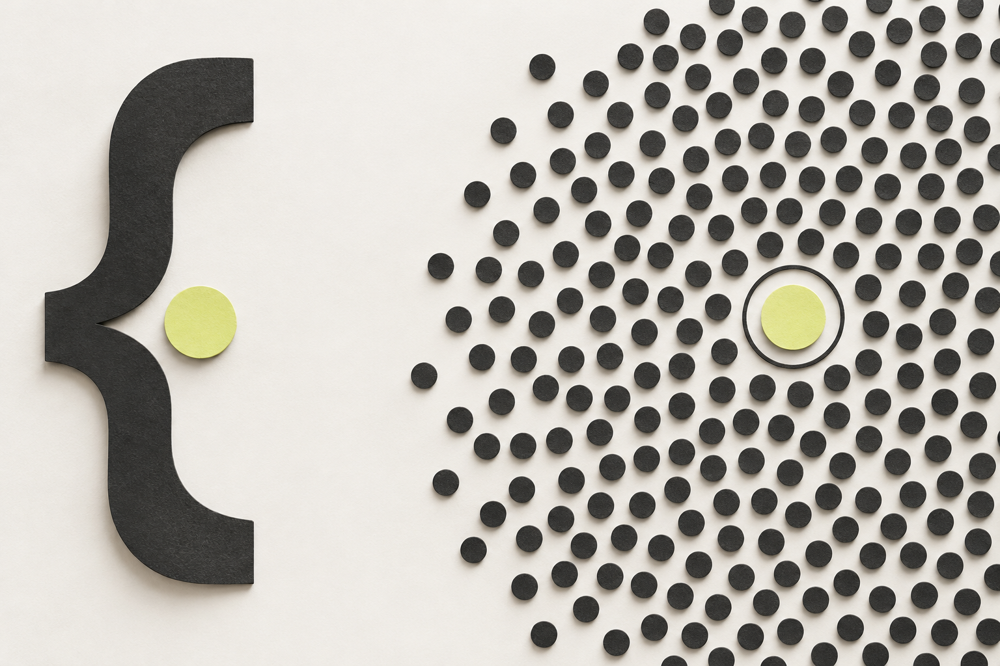
Show the shift from an indistinct field to an explained priority.
Core imagery: geometric fields, framing, one selected signal and product explanations. Keep backgrounds quiet and crops deliberate.
Editorial material studies are an optional proposed extension. Avoid stock teams, handshake clichés, generic AI glow and screenshots with real attendee data.
Generated or fictional imagery illustrates the identity. It is not customer proof or a measured product result.
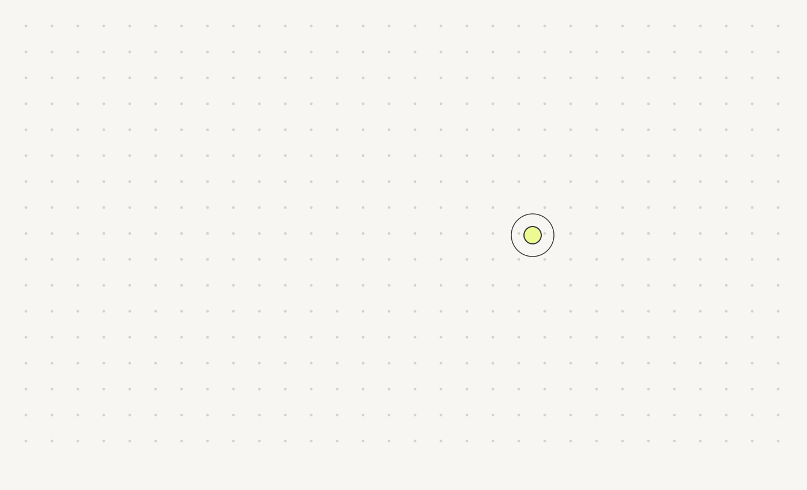
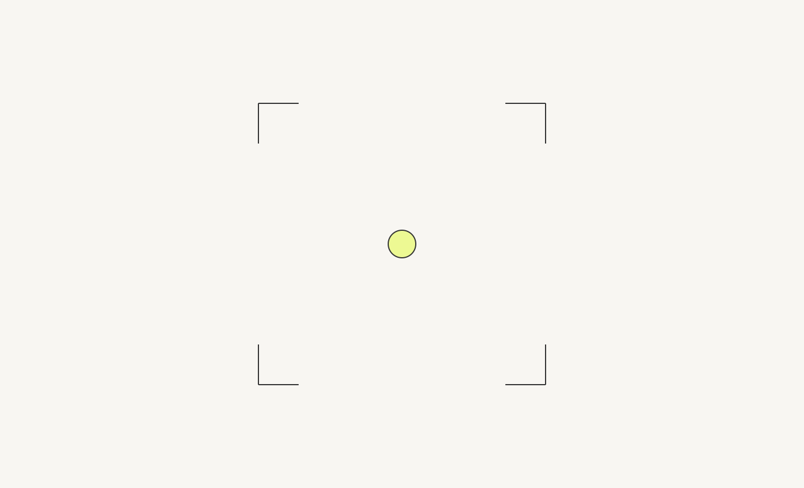
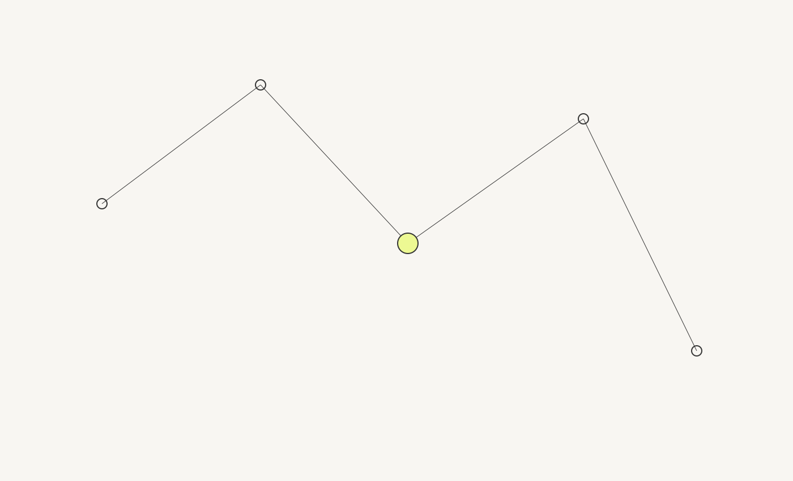
Signal field.
Many points, one priority. Use as a restrained environment.
Precision frame.
Corners and a selected point. Use for crops, section signatures and covers.
Signal network.
A conceptual relationship map. Never present it as actual participant data.
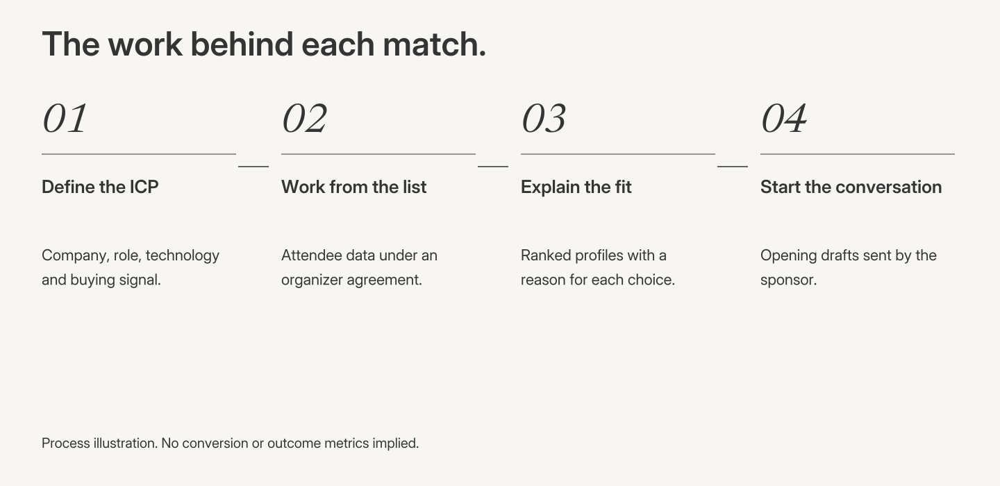
Show stages, inputs and responsibilities. Numbers 01–04 identify process steps, not conversion rates. Any performance infographic requires a named dataset, unit, period and denominator.
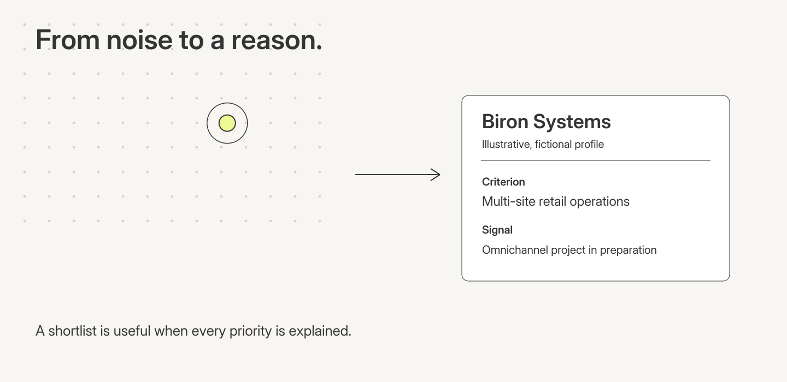
A fictional example can demonstrate criteria, signal and prioritization. Label the example clearly. Avoid false precision or a guaranteed number of matches.
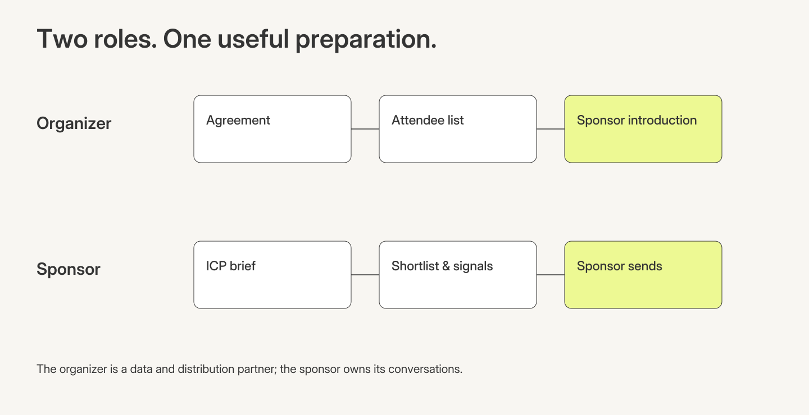
Keep organizer, BETA Labs and sponsor roles distinct. The organizer enables data and distribution; BETA Labs prepares the shortlist; the sponsor sends the message and owns the relationship.
Feed portrait.
1080 × 1350. One thought, one focal move.
Square.
1080 × 1080. Use for a sharp statement or simple mechanism.
Story.
1080 × 1920. Keep essential content away from interface overlays.
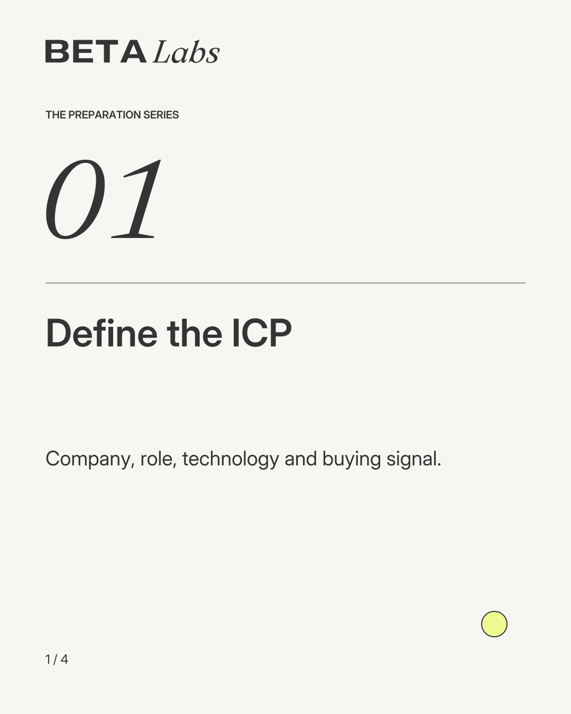
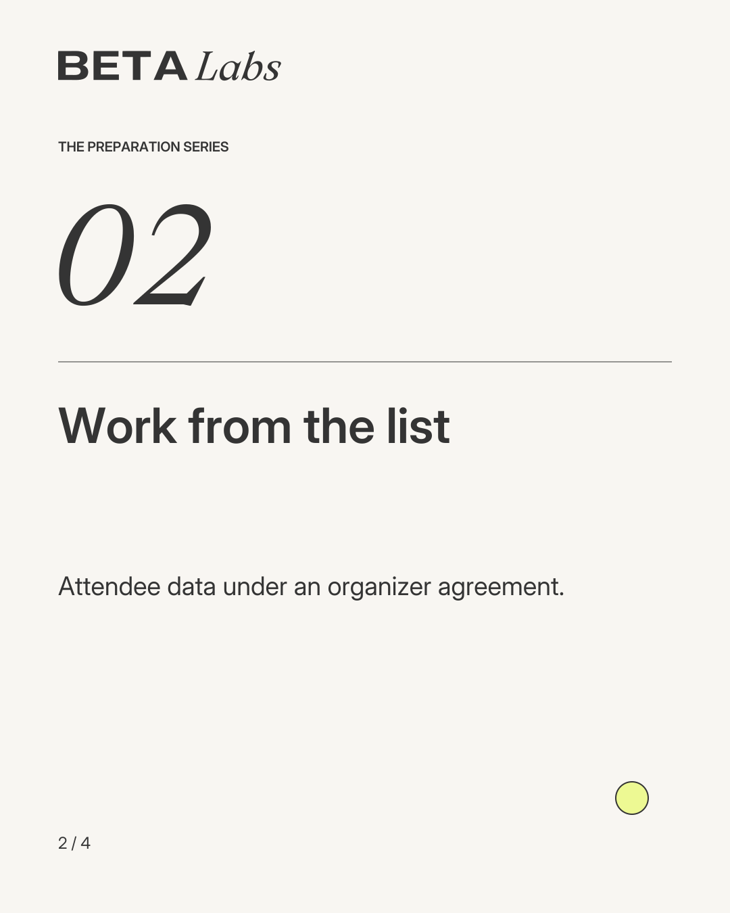
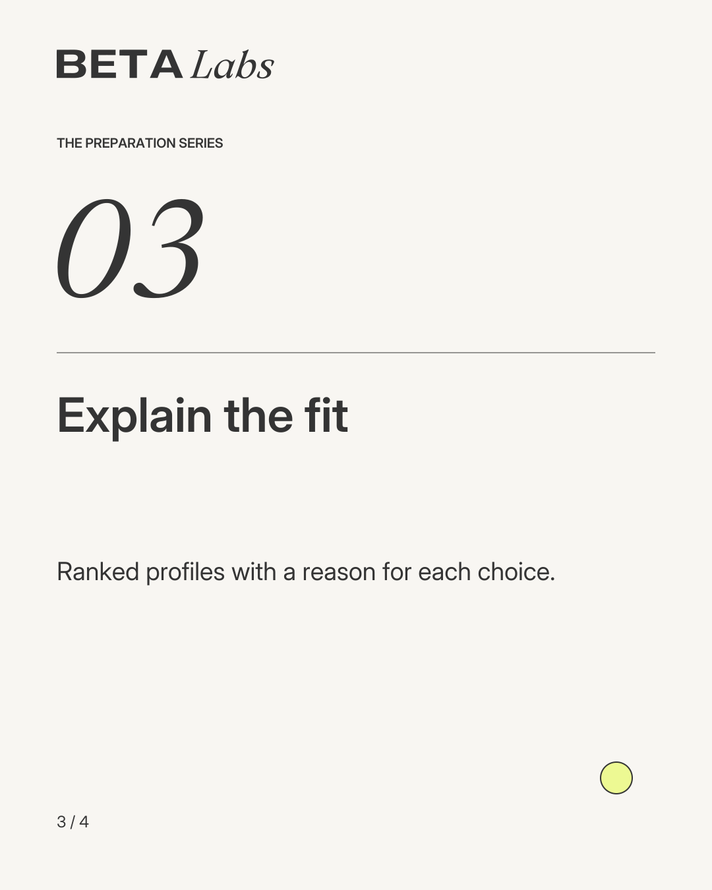
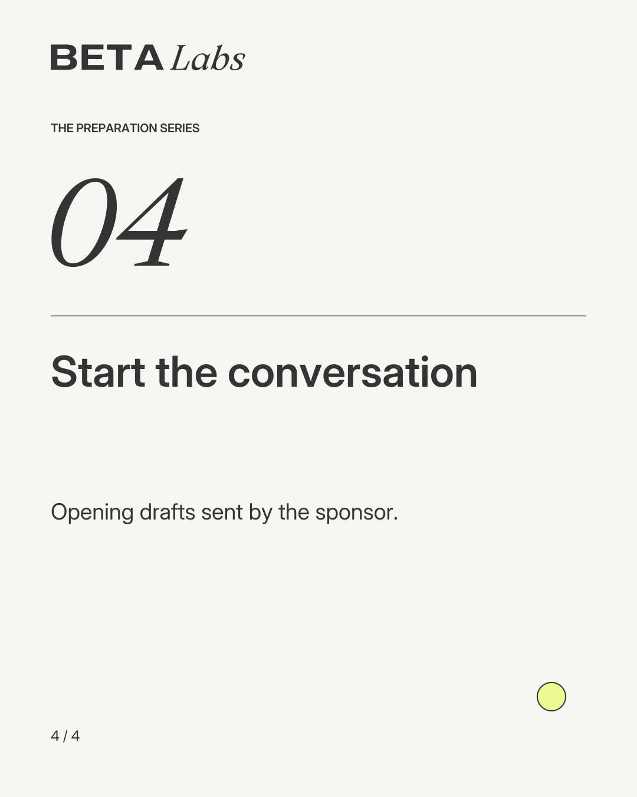
Four editable vector masters: ICP, list, signal and opening. Each slide owns one idea. Preserve the rhythm, generous margins and footer orientation. Change copy through the source recipe rather than scaling text until it becomes unreadable.
Export targets: LinkedIn company 1128×191; LinkedIn profile 1584×396; Facebook page 1640×624; X 1500×500; YouTube 2560×1440. Composition reserves avatar/center-safe areas. Platform crops and requirements should be checked at upload; these are not newly verified platform specs.